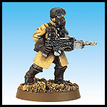
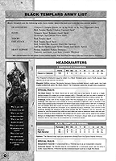

|
Nous lançons le Codex Armageddon en même temps que la campagne la plus furieuse de tous les temps. Ce nouveau Codex se concentre sur le retour de la Waagh! Ghazghkull sur le secteur d'une importance stratégique vitale d'Armageddon, et plus particulièrement sur la colossale guerre qui menace d'anéantir la plantète tout entière. Ce Codex, écrit par Andy Chambers, Gavin Thope et Jervis Johnson se divise en trois chapitres distincts: Cette section dépeint la sombre histoire d'un monde ravagé par la guerre, un monde où la guerre est un mode de vie. Vous y trouverez également la description des forces en présence de part et d'autre de la ligne de front, une chronologie détaillé des évènements qui ont conduit à une guerre totale, les conflits du passé qui ont failli détruire ce monde impérial important, ainsi que les biographies des principaux protagonnistes de la 3ème guerre pour Armageddon. Ce chapitre vpous explique également comment tirer pleinement partie de vos batailles situées lors de la troisième guerre.
Le Codex Armageddon contient également quatre nouvelles listes d'armée:
Pour mettre la main sur une copie de ce splendide Codex, adressez-vous à votre magasin Games Workshop, à votre revendeur indépendantt ou appelez la VPC.
|
a |
 Codex Armageddon
Un guide de peinture complet  Quatre nouvelles listes d'armée - Bientôt Disponible! - Bientôt Disponible!
- Bientôt Disponible! |
 Une section couleur présentant des figurines peintes de main de maître, représentant ceux qui ont pris part à cette guerre sanglante. Elle contient un guide pour les uniformes des multiples régiments de la Garde Impériale, pour les nombreux chapitres de Space Marines défendant Armageddon, ainsi que les marques tribales des bandes orks les plus célèbres qui compose la vaste marée verte prête à balayer la planète et à la plonger dans l'oubli.
Une section couleur présentant des figurines peintes de main de maître, représentant ceux qui ont pris part à cette guerre sanglante. Elle contient un guide pour les uniformes des multiples régiments de la Garde Impériale, pour les nombreux chapitres de Space Marines défendant Armageddon, ainsi que les marques tribales des bandes orks les plus célèbres qui compose la vaste marée verte prête à balayer la planète et à la plonger dans l'oubli.